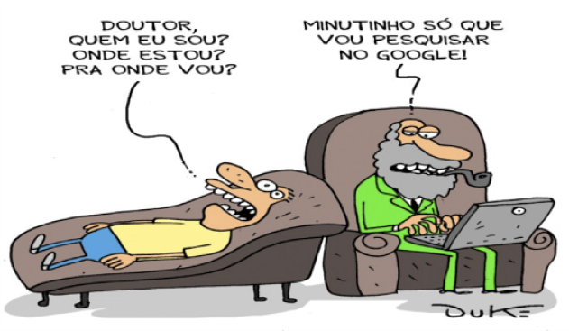
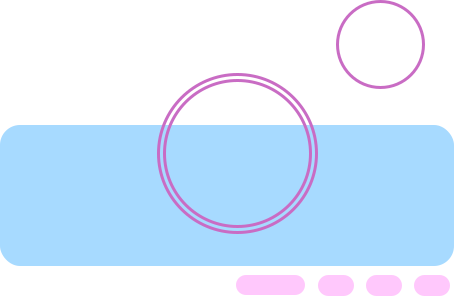
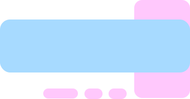
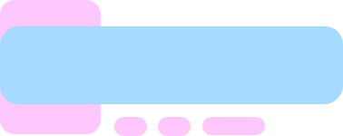
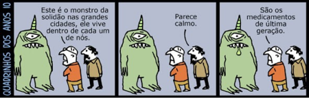
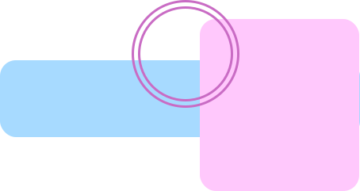
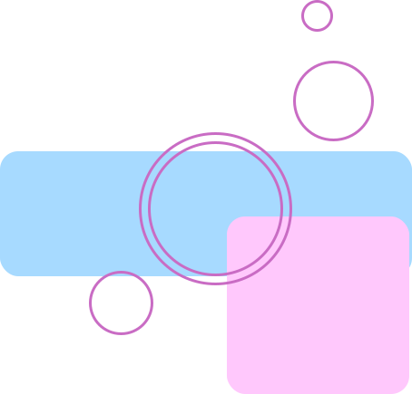
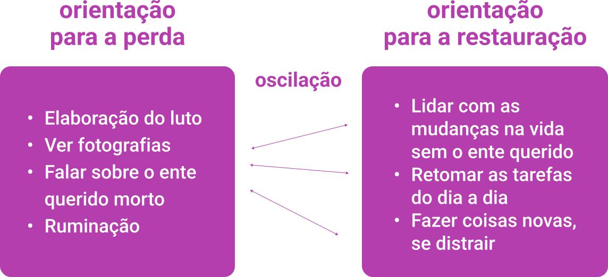

Sobre as autoras
Paulo Vitor Palma Navasconi
Psicólogo, professor e membro do coletivo Yalodê-Badá e do Núcleo de Estudos Interdisciplinar Afro-Brasileiro da UEM (NEIAB). Graduado pela Universidade Estadual de Maringá (UEM). Especialista em Psicologia Social. Mestre e Doutor em Subjetividade e Práticas Sociais na Contemporaneidade pela Universidade Estadual de Maringá. Autor do livro Vida, Adoecimento e Suicídio: racismo na produção do conhecimento sobre jovens negros LGBTTIs, publicado no ano de 2019.
Vládia Jamile dos Santos Jucá
Psicóloga pela Universidade Federal do Ceará (UFC), com mestrado em Comunicação e Cultura e doutorado em Saúde Pública, ambos pela Universidade Federal da Bahia (UFBA). Realizou estágio pós-doutoral em teoria psicanalítica pela Universidade Federal de Minas Gerais (UFMG). Professora dos cursos de graduação de pós-graduação do Departamento de Psicologia da UFC, em que integra o grupo de Pesquisas e Intervenções sobre Violências e Produção das Subjetividades (VIESES). Desenvolve pesquisas e práticas de extensão voltadas para adolescentes em contextos de vulnerabilidade, por meio do diálogo entre a teoria psicanalítica e a saúde mental coletiva.
Estela Ramires Lourenço
Psicóloga e consultora em Saúde Mental na Escola. Doutoranda do PPG Educação e Saúde na Infância e Adolescência pela UNIFESP. Mestra em Ensino em Ciências da Saúde pela UNIFESP. Especialista em Autolesão, Prevenção e Posvenção do Suicídio pelo Instituto Vita Alere-SP. Especialista em Gestão em Saúde pela UFSJ. Especialista em Gestão de Pessoas e Projetos Sociais pela UNIFEI. Membro da Associação Brasileira de Estudos e Prevenção de Suicídio (ABEPS).

Coordenação acadêmica – Luana Lima
Psicóloga e Bacharel Interdisciplinar em Humanidades (UFBA). Doutoranda e Mestra em Bioética (UnB). Membra-fundadora da Associação Brasileira de Estudo e Prevenção do Suicídio (ABEPS). Pesquisadora do Observatório de Direitos Humanos dos Pacientes (ODHP). Autora do livro Deverei velar pelo Outro? Suicídio, estigma e economia dos cuidados.

Coordenação Pedagógica – Maisse Fernandes de Oliveira Rotta
Médica pediatra. Mestra em Saúde da Família e Comunidade pela Fiocruz. Doutoranda em Saúde e Desenvolvimento na Região Centro-Oeste pela UFMS. Pós-graduada em psiquiatria infantil. Professora do curso de medicina da Universidade Anhanguera (UNIDERP) e da Universidade Estadual do Mato Grosso do Sul.Suicídio, estigma e economia dos cuidados.
Módulo: Adolescências e Juventudes: Dores e Sofrimentos Específicos
Sobre o Módulo
Adolescências e Juventudes: Dores e Sofrimentos Específicos
Carga horaria: 40 horas
OBJETIVO DE APRENDIZAGEM
Apresentar os principais sofrimentos e transtornos mentais na adolescência, a violência e adições, como um problema de saúde pública, considerando a violência estrutural, as desigualdades sociais e o risco de suicídio, visando à promoção da saúde e à garantia de direitos.
Apresentação do Módulo
“Ponho linhas no mundo, mas já quis pôr no pulso,
Sem o torro, nossa vida não vale a de um cachorro triste.
Hoje cedo não era um hit, era um pedido de socorro.
[...] A última tendência é depressão com aparência de férias.
[...] Tenho sangrado demais,
Tenho chorado pra cachorro.
Ano passado eu morri,
Mas esse ano eu não morro.
[...] Permita que eu fale e não as minhas cicatrizes.
Tanta dor rouba a nossa voz, sabe o que resta de nós?”
(EMICIDA)
Seja bem-vindo ao módulo Adolescência e Juventudes: Dores e Sofrimentos Específicos. Pretendemos, nesta nossa breve jornada de aprendizagem, conversar sobre as experiências de sofrimento mais recorrentes na adolescência, com destaque para violência, transtornos mentais, comportamento suicida e luto, que são vivências que provocam grandes impactos na saúde mental e nas dinâmicas relacionais.
A adolescência é uma experiência plural, portanto, falamos de adolescências. Um dos aspectos fundamentais sobre os quais precisamos refletir é a violência durante esse período da vida. A primeira parte do módulo foi dedicada, dessa forma, à elaboração do conceito de violência, aos tipos e aos efeitos diversos que estas podem causar. Abordamos, em seguida, a adolescência e as substâncias psicoativas, especialmente com base nas perspectivas ampliadas da tríade sujeito-droga-contexto e na redução de danos. O bloco seguinte tratou de experiências de sofrimento e transtornos mentais. Para além de uma descrição desses estados de fragilidade e/ou adoecimento, refletimos acerca da tendência à patologização das experiências vitais, especialmente as desviantes, indesejadas e improdutivas, que tendem a centralizar os problemas no indivíduo, desatrelando os processos de subjetivação das relações sociais e afetivas.
Analisamos também o fenômeno da autolesão, suas expressões, modos de enfrentamento, etc. Em diálogo temático, aprofundamos o tema do comportamento suicida: apresentamos dados estatísticos acerca do fenômeno e fazemos uma análise dos condicionantes sociais da saúde, dos fatores de risco, de proteção e mitos envolvidos. A análise do módulo se encerra com o estudo acerca do luto – desde perdas e/ou transformações corporais, que caracterizam o adolescer, às mortes que determinam os processos de enlutamento.
A nossa proposta denega uma leitura individualizante acrítica, que ,comumente, desconsidera a dimensão sociopolítica presente na produção do sofrimento. Ao contrário de uma tendência moderna e neoliberal que compreende a ansiedade, a depressão, o comportamento suicida ou qualquer comportamento indesejado como sinal de inadequação, transtorno ou fracasso individual, o passeio pelo universo psíquico da nossa juventude no presente módulo tem por finalidade potencializar as diversas vozes e experiências; estimular o debate sobre as diversas manifestações de sofrimento na atualidade; legitimar os discursos dos sujeitos sofrentes para ampliar e intensificar os modos de cuidado, as ações e políticas de promoção à saúde mental e prevenção do suicídio. Vamos juntos?

ADOLESCÊNCIA(S) E VIOLÊNCIA(S)
Adolescência(s) e violência(s)
Afinal, o que é adolescência? Quando começa e quando termina? Como acontecem a adolescência e a juventude? Essas são questões que passaram a ser fundamentais nos estudos do desenvolvimento humano e, principalmente, nas áreas das ciências humanas e da saúde. No entanto, a cada tentativa de responder a essas questões, tendemos a naturalizar o processo de desenvolvimento da pessoa, sobretudo, o período da adolescência. Você deve estar se perguntando: o que significa dizer isso?
Pois bem, naturalizar significa compreender que o desenvolvimento humano é um produto natural e, desse modo, que as práticas educativas e sociais pouco interferem no processo de desenvolvimento. Olhar a adolescência por esse viés nos faz universalizar um fenômeno complexo e plural, com tendências e variações de acordo com a época histórica, povos e culturas. Por exemplo: imagine como foi a sua adolescência. Imaginou? Agora imagine a adolescência de Júlia ou Alex. Elas podem ser consideradas iguais, semelhantes ou diferentes?
Convidamos você a pensar a adolescência não como um fenômeno universal, ou seja, comum a todas e todos, entendemos que não existe uma adolescência, mas várias formas de experienciar o que estamos chamando de adolescências. Por exemplo, basta pensarmos em nossas brincadeiras, vestimentas e hábitos que vamos perceber que nossos comportamentos, ações e hábitos mudam, conforme transformações sócio-históricas vão acontecendo.
ANIMAÇÃO TÓPICO
No país há graves problemas educacionais, de moradia, de oportunidades de trabalho e lazer, e, consequentemente, grandes desigualdades nas formas de viver, de adoecer e de morrer.
Esses problemas provocam profundas desigualdades socioeconômicas e sociais, que também afetam adolescentes e jovens. Essas desigualdades fazem com que muitos adolescentes tenham dificuldades em obter reconhecimento e acesso a seus direitos elementares, como educação, mobilidade, nutrição, habitação, boa saúde física e mental, trabalho, lazer, entre outros (MINAYO; SOUZA, 1999).
Refletindo sobre o fenômeno da violência
A violência está presente nas relações e experiências humanas desde os primórdios da humanidade e atinge todos os setores da sociedade, apresentando-se como um fenômeno multideterminado e complexo.
A violência “não se limita ao uso da força física, mas à possibilidade ou ameaça de usá-la” (VELHO, 2000, p. 11). Com isso, é possível associar a violência a uma ideia de poder efetivado pela dinâmica das relações sociais marcada pela hierarquia e dominação.
“Encerrar a noção de violência numa definição fixa e simples é expor-se a reduzi-la, a compreender mal sua evolução e sua especificidade histórica” (MINAYO, 2006, p. 14).
A seguir, duas lições importantes sobre a violência:
Lição 01
Podemos compreender que a violência é, antes de tudo, uma questão social e, portanto, em si, não é objeto próprio do setor saúde.
Lição 02
A violência se torna um tema do campo da saúde pelo impacto que provoca na qualidade de vida; pelas lesões físicas, psíquicas e morais que acarreta e pelas exigências de atenção e cuidados dos serviços médico-hospitalares (MINAYO, 2004).
No ano de 2002, a Organização Mundial da Saúde publicou extenso informe denominado Relatório Mundial sobre Violência e Saúde (KRUG et al., 2002, p.5), trazendo a seguinte definição de violência: “uso intencional da força física ou do poder, real ou em ameaça, contra si próprio, contra outra pessoa, ou contra um grupo ou uma comunidade, que resulte ou tenha grande possibilidade de resultar em lesão, morte, dano psicológico, deficiência de desenvolvimento ou privação”.
Quanto à tipologia, a violência divide-se em: a) autoinfligida, que é a violência dirigida contra si mesmo; b) interpessoal, infligida entre duas pessoas, a qual se subdivide em familiar e comunitária, ou seja, considera-se violência doméstica/intrafamiliar a que ocorre entre os parceiros íntimos e entre os membros da família, principalmente no ambiente da casa, mas não unicamente. É toda ação ou omissão que prejudique o bem-estar, a integridade física, psicológica ou a liberdade e o direito ao pleno desenvolvimento de outra pessoa da família. Pode ser cometida dentro ou fora de casa por algum membro da família, incluindo pessoas que passam a assumir função parental, ainda que sem laços de consanguinidade, e que tenha relação de poder. A violência doméstica/intrafamiliar não se refere apenas ao espaço físico onde a violência ocorre, mas, também, às relações em que se constrói e efetua. Este tipo de violência também inclui outros membros do grupo, sem função parental, que convivam no espaço doméstico. A violência comunitária é definida como aquela que ocorre no ambiente social em geral, entre conhecidos ou desconhecido. Incluem-se aí empregados, pessoas que convivem esporadicamente, agregados, por sua vez, a violência comunitária é definida como aquela que ocorre no ambiente social em geral, entre conhecidos ou desconhecidos. É praticada por meio de agressão às pessoas, por atentado à sua integridade e vida e/ou a seus bens e constitui objeto de prevenção e repressão por parte das forças de segurança pública e sistema de justiça (polícias, Ministério Público e poder Judiciário). Por fim, a violência c) coletiva, cometida pelos grandes grupos ou Estado, podendo ser social, política ou econômica. Quanto à natureza dos atos violentos, eles podem ser de caráter: físico, sexual e psicológico (KRUG et al., 2002).
Conhecendo os tipos de violência
Quais tipos de violência você conhece? Krug et al. (2002) nos apresentam alguns tipos, com suas respectivas definições. Veja mais clicando nos flash cards a seguir:
Tortura
atos intencionalmente praticados para causar lesões físicas ou mentais, ou de ambas as naturezas, com a finalidade de obter vantagem, informação, aplicar castigo, entre outros.
Violência psicológica
ação ou omissão destinada a degradar ou a controlar ações, comportamentos, crenças e decisões de outra pessoa por meio de intimidação, manipulação, ameaça direta ou indireta, humilhação, isolamento ou qualquer outra conduta que implique prejuízo, à saúde psicológica, à autodeterminação ou ao desenvolvimento pessoal.
Discriminação
ato de distinção, segregação, prejuízo, danos ou tratamento diferenciado de alguém, por causa de características pessoais, raça/etnia, gênero, religião, idade, origem social, entre outras.
Conhecendo os tipos de violência
Quais tipos de violência você conhece? Krug et al. (2002) nos apresenta alguns tipos, com suas respectivas definições. Veja mais clicando nos flash cards a seguir:
Violência sexual
ato sexual ou tentativa de obter ato sexual, investidas ou comentários sexuais indesejáveis, ou tráfico ou qualquer outra forma, contra a sexualidade de uma pessoa usando coerção.
Abuso sexual sem contato físico
assédio sexual; abuso sexual verbal; telefonemas obscenos; exibicionismo; voyeurismo; e pornografia.
Abuso sexual com contato físico
atos físico-genitais praticados a outrem, que incluem carícias nos órgãos genitais, tentativas de relações sexuais, masturbação, sexo oral, penetração vaginal e anal.
Conhecendo os tipos de violência
Quais tipos de violência você conhece? Krug et al. (2002) nos apresenta alguns tipos, com suas respectivas definições. Veja mais clicando nos flash cards a seguir:
Violência física
ato de agressão física que provoca marcas visíveis ou não. Pode ser praticada com uso de força física do agressor, no qual machuca a vítima de várias maneiras, inclusive com o uso de armas. Exemplos: bater, chutar, queimar, cortar e mutilar.
Negligência e abandono
abandono, descuido, desamparo, desresponsabilização e descompromisso do cuidado. Esse ato não está necessariamente relacionado a dificuldades socioeconômicas.
Bullying
também chamado de intimidação sistemática, conforme definido pela Lei nº 13.185/2015, pode ser compreendido como sendo, “todo ato de violência física ou psicológica, intencional e repetitivo que ocorre sem motivação evidente, praticado por indivíduo ou grupo, contra uma ou mais pessoas, com o objetivo de intimidá-la ou agredi-la, causando dor e angústia à vítima, em uma relação de desequilíbrio de poder entre as partes envolvidas (BRASIL, 2015).
Conhecendo os tipos de violência
Quais tipos de violência você conhece? Krug et al. (2002) nos apresenta alguns tipos, com suas respectivas definições. Veja mais clicando nos flash cards a seguir:
Trabalho infantil
é a exploração da força de trabalho de pessoas que tenham idade inferior à mínima permitida para trabalhar. No Brasil, o trabalho não é permitido, sob qualquer condição, para crianças e adolescentes com menos de 14 anos. Adolescentes entre 14 e 16 podem trabalhar, mas na condição de aprendizes. Quando a pessoa tem entre 16 e 18 anos, as atividades laborais são permitidas, desde que não aconteçam das 22h às 5h e não sejam insalubres ou perigosas.
Tráfico de crianças e adolescentes
recrutamento, transporte, transferência, alojamento ou acolhimento de uma criança ou adolescente para fins de exploração.
Violência institucional
tipo de violência motivada por desigualdades (de gênero, étnico-raciais, econômicas, etc.). Essas desigualdades se formalizam e institucionalizam nas organizações privadas e nos aparelhos estatais, assim como nos diferentes grupos que constituem essas sociedades.
Conhecendo os tipos de violência
Quais tipos de violência você conhece? Krug et al. (2002) nos apresenta alguns tipos, com suas respectivas definições. Veja mais clicando nos flash cards a seguir:
Violência intrafamiliar
é qualquer tipo de violência praticada dentro de casa ou unidade doméstica, sendo, geralmente, praticada por um membro da família que vive com a vítima. As agressões domésticas incluem: abuso físico, sexual e psicológico, negligência e abandono.
Violência moral
ação destinada a caluniar, difamar ou injuriar a honra ou a reputação da pessoa.
Violência patrimonial
ato de violência que implique dano, perda, subtração, destruição ou retenção de objetos, documentos pessoais, bens e valores.
Você sabia?
Segundo Minayo et al. (2018), a violência afeta muito a saúde:
➔ A violência provoca morte, lesões e traumas físicos e um sem-número de agravos mentais, emocionais e espirituais;
➔ a violência diminui a qualidade de vida das pessoas e das coletividades;
➔ a violência gera desafios para o atendimento médico e evidencia a necessidade de uma atuação muito mais específica, interdisciplinar, multiprofissional, intersetorial, visando às necessidades dos cidadãos.
É de suma importância atentar-se ao fato de que a situação de risco à qual o adolescente está exposto pode afetar o rendimento escolar e provocar outros problemas, como faltas frequentes à escola. Além disso, pode influenciar nas condições de saúde de forma geral e nas relações afetivas individuais, com sua família e com o mundo que o cerca, podendo levá-lo a um circuito de sociabilidade marcado pela violência, pelo uso abusivo de drogas e pelos conflitos com a lei.
➔ Você se lembra do nosso caso complexo? Pois bem, falas como “Aqui eu não me sinto pertencente”, “eu não pertenço a nada” e “eu não tenho nenhum valor” são falas que nos dão indícios de alerta; indicam que há algo errado e que esse adolescente precisa ser escutado.
➔ Existe a necessidade de compreender não só situações em que a violência está presente, mas também quais são os fatores de risco em jogo.
Portanto, compreender o fenômeno da violência na adolescência requer um olhar contextualizado. É muito importante saber quem são os adolescentes que estão em contexto de violência. Para isso, precisamos observar raça, gênero, classe, territórios, etc. É preciso entender a violência não apenas como uma questão singular, mas também social, complexa e multideterminada. Com isso, podemos afirmar que a violência contra crianças e adolescentes acontece em diversos contextos, como no ambiente familiar, nas escolas e nas ruas, podendo se manifestar de diferentes formas, não excludentes entre si.
Figura 1 - Violência
Fatores de risco ou de maior vulnerabilidade para crianças, adolescentes e jovens
- Violência por parte dos pais e de outros responsáveis;
- Abuso sexual, negligência educacional e nutricional, prostituição forçada;
- Ambientes familiares instáveis;
- Reprodução e naturalização da violência, ou seja, em muitos casos, a violência se torna a forma escolhida para a resolução de conflitos;
- Pobreza, elevados níveis de desemprego e rotatividade populacional. A pobreza afeta a população infantojuvenil por impactar o comportamento parental e provocar a deterioração de infraestruturas físicas e sociais da comunidade;
- Abuso de substâncias, o estresse e o isolamento social (KRUG et al., 2002).
Feedback positivo: Os profissionais que trabalham com crianças e adolescentes em situação de vulnerabilidade ou de maior risco de violência precisam estar atentos para identificar quais fatores de risco estão associados ao contexto específico. Reconhecer os fatores de risco é uma forma de ampliar os modos de intervenção e cuidado.
Feedback orientador: Para prevenir a violência contra crianças e adolescentes é preciso saber identificá-la e notificá-la, assim como buscar formas eticamente comprometidas de atuação.
Em toda situação de violência, deve haver uma intervenção de qualquer pessoa que conheça o fato. O artigo 13 do ECA (BRASIL, 2017a) prevê que “os casos de suspeita ou confirmação de maus-tratos contra criança ou adolescente serão obrigatoriamente comunicados ao Conselho Tutelar da respectiva localidade, sem prejuízo de outras providências legais”.
Nesse momento, gostaríamos de saber: quais são as ações de prevenção à violência contra adolescentes que são desenvolvidas no serviço em que você se encontra inserido?
HUMANIZAR E CUIDAR PARA PREVENIR
Humanizar o cuidado é se posicionar a favor da vida com dignidade, respeitando as diferenças e as particularidades, como gênero, etnia, raça, orientação sexual, entre outras características, assim como as populações específicas (indígenas, quilombolas, ribeirinhos, assentados, etc.). A prevenção à violência não se dá somente por meio de uma única ação ou iniciativa, mas pela combinação de diversas estratégias que visem à garantia de direitos fundamentais. Nesse sentido, é possível afirmar que a assistência à vítima de violência, aqui, em especial, ao adolescente que está inserido em um contexto de violência, requer empatia, habilidade, sensibilidade e compromisso com essa questão. Por isso, os profissionais devem sempre atuar de forma articulada, desenvolvendo um trabalho interdisciplinar e interprofissional, visando sempre à promoção, à proteção e à garantia de direitos.
Os casos de violência contra criança e adolescente devem ser denunciados ao Conselho Tutelar, Ministério Público ou aos disque-denúncias 24h, como o Disque 100. O disque 100 é um canal de comunicação da sociedade civil com o poder público, que possibilita conhecer e avaliar a dimensão da violência contra os direitos humanos e o sistema de proteção, bem como orientar a elaboração de políticas públicas.
Em suma, abordamos neste primeiro momento, o conceito de violência, sua tipologia, as vulnerabilidades específicas quando se trata das violências praticadas contra os adolescentes, bem como algumas recomendações de como proceder no atendimento às vítimas. A violência hoje atravessa transversalmente adolescentes de várias etnias, classes sociais e gêneros, mas de modo desigual, como tratamos anteriormente. A partir da próxima seção, trataremos de questões concernentes aos modos de expressão do sofrimento psíquico, iniciando com as adições na adolescência.

ADOLESCÊNCIAS E O USO DE SUBSTÂNCIAS PSICOATIVAS
Adolescência e o uso de substâncias psicoativas
O uso de substâncias psicoativas por adolescentes preocupa tanto profissionais da rede de assistência e de proteção a crianças e adolescentes quanto pais e professores. Para entendermos melhor essa questão, é importante falarmos sobre os vários usos que os adolescentes fazem das substâncias. Por exemplo, se é um uso para socializar com seus pares ou um uso para relaxar diante de situações adversas com as quais não está conseguindo lidar. Outro ponto é sabermos quais são as substâncias mais utilizadas e entendermos quando o uso precisa ser objeto de uma atenção especializada no campo da saúde. Nesta direção, ao tratarmos das questões que envolvem adolescência e substâncias psicoativas, é importante diferenciarmos uso, abuso e adição. Considerando a possibilidade de o uso se tornar abusivo, vamos conhecer, também, os fatores de risco que aumentam a probabilidade de o uso tornar-se problemático, bem como os fatores de proteção que atuam na direção contrária.
O uso de substâncias deve ser pensado a partir de um tripé formado pela pessoa usuária e sua história, a substância consumida e o contexto no qual acontece o uso
“[...] cada humano consumirá essa ou aquela droga em função de suas necessidades subjetivas e sociais. Não são as drogas que fazem os humanos [...] são os homens que fazem as drogas” (NERY FILHO, 2012, p. 20).
É importante esclarecer que preferimos usar substâncias psicoativas a drogas porque, quando escutamos o segundo termo, geralmente pensamos em algo que necessariamente é ilegal e prejudicial à saúde. O termo substâncias psicoativas, por sua vez, ajuda-nos a evitar um julgamento moral prévio e evidencia o fato de que um conjunto de substâncias atua em nosso cérebro, alterando seu funcionamento. Nesse sentido, o café, muito ingerido em nossa cultura, é uma substância psicoativa que, tomada em demasia, pode gerar dependência. No entanto, em doses pequenas, é um estimulante, sem maiores prejuízos à saúde. Vejamos o exemplo das medicações prescritas por psiquiatras, como ansiolíticos e antidepressivos.
Essas medicações são lícitas, atuam sobre o cérebro e são comercializadas de forma controlada. Devem ser utilizadas com finalidade terapêutica. No entanto, identificamos, inclusive entre adolescentes, uso indevido dessas medicações que, por vezes, são prescritas para familiares ou obtidas no mercado informal.
Em linhas gerais, as substância psicoativas são classificadas em:
bebidas alcoólicas, solventes ou inalantes, tranquilizantes ou ansiolíticos, calmantes e sedativos, ópio e morfina
cafeína, anfetaminas, cocaína e tabaco
maconha, cogumelos e plantas alucinógenas, alucinógeno sintético, êxtase e anticolinérgicos (MALBERGIER; AMARAL, 2013).
Sobre a maconha, há discordâncias. Encontraremos quem a classifique como substância depressora e quem a coloque entre as perturbadoras. Sobre isso, é importante reconhecer que hoje há uma grande diversidade de apresentações da maconha, inclusive a prensada – de menor custo –, que envolve mistura com outras substâncias.
O nível socioeconômico, os territórios onde circulam e as cenas de uso são muito importantes para definir quais substâncias estarão disponíveis para as (os) adolescentes. Por exemplo, em festas eletrônicas, é comum o uso das drogas sintéticas que alteram o estado de consciência e permitem experiências psicodélicas (RAUPP; PEREIRA, 2022). Com recorrência, o uso dessas substâncias nesses contextos tem um caráter experimental, e as práticas de redução de danos são fundamentais para proteger os adolescentes
A redução de danos é um modo de cuidar, efetivado por meio de um conjunto de práticas com o propósito de evitar agravos à saúde relacionados ao uso de substâncias psicoativas. A redução de danos se alinha aos princípios da integralidade e da universalidade do Sistema Único de Saúde. Todas as pessoas têm o direito de ser cuidadas, mesmo as que estão em uso abusivo ou dependência de substâncias e não conseguem interrompê-lo (SURJUS; SILVA, 2019). Falar de redução de danos, quando se trata de adolescentes, é sempre delicado, porque envolve admitir que adolescentes usam drogas. Não ofertar a redução de danos a esse público, por outro lado, é negar um dado da realidade e, em certa medida, ferir a base do Estatuto da Criança e do Adolescente, pautada pela ideia de proteção integral.
As finalidades dos usos dessas substâncias são várias. Temos usos ritualísticos (em contextos religiosos), usos recreativos, usos medicinais e, principalmente entre os adolescentes, usos para vencer a timidez, na tentativa de superar as dificuldades de socialização. Por vezes, a cocaína é utilizada com este intuito: facilitar a interação com os demais quando a inibição é um obstáculo para estar entre os pares. Encontramos, também, adolescentes que fazem uso, por exemplo, de maconha para aliviar momentos de ansiedade. Além disso, é muito comum o adolescente experimentar substâncias psicoativas para conhecer o seu efeito e para facilitar a construção de seu lugar no campo social, uma vez que esse uso geralmente é compartilhado nos grupos com os quais ele se identifica (SOUZA et al., 2015).
O fato de um adolescente fazer uso esporádico de uma substância não significa necessariamente que esteja em um padrão abusivo de uso ou em dependência química. É necessário investigar para conhecer o padrão de uso e como isso afeta sua vida. O uso pode ser ocasional e, conforme afirmamos acima, ser recreativo ou para fins de socialização. Quando se percebe esse padrão de uso, o melhor é conversar e encontrar as formas de proteção para que o uso não se torne abusivo ou provoque outros agravos à saúde. Nessa direção, a lógica da redução de danos é fundamental. A redução de danos não acontece apenas quando os problemas de saúde já estão instalados. A estratégia em questão serve para reduzir agravos.

Muitas pessoas confundem o abuso de substâncias com dependência, que pode ser psicológica e/ou química. Nos quadros de dependência, há perdas de laços sociais, e mesmo os cuidados básicos, como higiene e alimentação, podem ser interrompidos. O uso se torna compulsivo. Com frequência, nesse quadro, adolescentes se colocam em situação de risco para obter a substância, submetendo-se a diversos tipos de exploração, como sexual, ou entrando para o mundo do crime para pagar pelo que consomem. É fundamental entendermos que a dependência é uma questão de saúde e assim deve ser tratada. Não é uma falha de caráter ou qualquer outro modo de desvio moral. Os Centros de Atenção Psicossocial para a Infância e para Adolescência (CAPSi), bem como os Centros de Atenção Psicossocial, que tratam os casos de álcool e de outras drogas (CAPSad), têm equipes que podem ser acionadas para realizar o cuidado necessário. Eventualmente, a internação para desintoxicação pode ser necessária e deve acontecer no âmbito de um hospital geral, durando o tempo mínimo para que o tratamento possa seguir no contexto comunitário.
Precisamos conhecer os fatores de risco e os fatores de proteção presentes na relação dos adolescentes com as substâncias psicoativas (SCHENKER; MINAYO, 2005). Reconhecer ambos os fatores nos ajuda a trabalhar no sentido da promoção da saúde, ou seja, do cuidado ampliado que chega antes do adoecimento.
- Vulnerabilidade social e ausência de uma rede de proteção;
- O padrão de uso familiar e a “naturalidade” diante de um início precoce do uso, por exemplo, de álcool;
- Relações em grupo que levam a uma necessidade de uso de substâncias para ser aceito (situação mais complicada quando os adultos não estão atentos a esses movimentos)
- A escola opera como fator de risco quando é fonte de fatores estressantes, como práticas de bullying e cobranças excessivas que geram o sentimento de não ser bom o suficiente, a não atenção às necessidades de cada pessoa, inclusive aos sinais apresentados pelos adolescentes que estão sendo alvos de violência;
- A glamourização de algumas substâncias pela publicidade e pelas redes sociais;
- A disponibilidade e facilidade de obtenção de substâncias no território do jovem.
- A existência de uma rede de proteção com pessoas nas quais o adolescente confia e com quem pode contar;
- Vínculos familiares produtores de acolhimento e um contexto relacional que permita o adolescente se expressar;
- Autoestima e relações de amizade fundadas na solidariedade e na partilha das estratégias de cuidado e proteção;
- Escolas que estimulam a aprendizagem, ofertam atividades extraclasse (como artes e esportes) e desenvolvem espaços de trocas e conversas sobre temas diversos. É fundamental que a escola esteja atenta às necessidades de cada pessoa e aos sinais de sofrimento que eventualmente venham a apresentar;
- Acesso às informações reais sobre o uso de substâncias e seus efeitos, incluindo práticas de redução de danos.
Apresentamos, nesta seção, as substâncias psicoativas na adolescência, diferenciando os vários tipos de uso e destacando a diferença entre uso ocasional, abusivo e dependência. Elencamos também os fatores de proteção e de risco, cujo conhecimento nos auxilia a aprimorar as práticas de cuidado. Enfatizamos, por fim, a necessidade de trabalharmos com a redução de danos em contextos diversos, como escolas, festas e eventos, pelos quais circulam jovens, bem como em outros espaços que agreguem adolescentes, como pistas de skate, centros de convivência e de referência em juventudes e espaços destinados à prática de esportes. Dialogar é o melhor caminho, e não há diálogo sem a escuta do adolescente acerca das suas experiências, inquietações e dúvidas.

Adolescências, ansiedade e contextos sociais
ADOLESCÊNCIAS, ANSIEDADE E CONTEXTOS SOCIAIS
A ansiedade é uma das formas mais recorrentes de expressão do sofrimento psíquico na atualidade entre adolescentes, ao lado de outras condições clínicas, como a depressão e a síndrome do pânico. Uma definição de ansiedade é: “reação defensiva comum frente ao perigo ou situações consideradas ameaçadoras. Caracteriza-se por um grande mal-estar físico e psíquico, aflição, agonia” (ASSIS et al., 2007, p. 12).
É muito importante termos isto em mente. A ansiedade é uma reação diante de uma situação de perigo real ou imaginário. O mais intrigante é que a pessoa acometida por essa condição nem sempre consegue nomear o que lhe causa o medo e a necessidade de estar em situação de constante alerta. A ansiedade é vivida não apenas como medo, mas também como preocupação constante. Entre crianças e adolescentes, a preocupação pode se centrar em agradar os outros de vários modos, como tendo bom desempenho escolar.
Outro elemento importante é o fato de a ansiedade ser vivida como uma experiência concreta que afeta o corpo, podendo causar taquicardia, suor excessivo nas mãos e nos pés, tremores e até a sensação de morte iminente (nesses casos, falamos de ataques de pânico).
Nem toda ansiedade é patológica, portanto nem sempre essa condição requer tratamento. É fundamental entendermos o contexto no qual se encontra a pessoa ansiosa. Assim,
A ansiedade é uma resposta esperada diante de certas circunstâncias. Talvez o melhor exemplo de ansiedade seja a de separação, muito vivida por crianças ao iniciarem a vida escolar. É natural que, depois de um tempo de convívio intenso com a família, as primeiras idas para a escola gerem desconforto e medo; desconforto por haver o distanciamento de um contexto de proteção (quando a família funciona como fator protetivo) e medo por causa do desconhecido. A ansiedade de separação acomete não apenas as crianças, mas também seus cuidadores principais. Isso faz parte do processo de constituição do novo sujeito.
Outras situações contextuais com forte potencial para gerar ansiedade são as várias violências, elencadas na primeira parte deste módulo. As diversas formas de violência, como a decorrente do tráfico de drogas, sobretudo para crianças e adolescentes que habitam em territórios mais vulneráveis, a violência intrafamiliar e o bullying no contexto escolar, são fatores que contribuem para o surgimento da ansiedade.
A manifestação da ansiedade, como a de qualquer outro sinal de sofrimento, requer, portanto, um olhar cuidadoso, inclusive para o contexto no qual a pessoa está inserida. Vamos lembrar de Maria, cuja história foi brevemente apresentada no nosso caso complexo. Maria é vítima de violência intrafamiliar e habita em um território em que as disputas entre facções e a violência policial são parte do cotidiano.
Diante da história de vida de Maria e do contexto em que ela estava, o sofrimento psíquico é uma resposta às adversidades vividas. Diante do exposto, tratá-la apenas com medicações e com psicoterapia seria insuficiente. Aliás, seria inadequado, pois estaríamos tentando controlar os sintomas sem realizar outras ações necessárias para tratar as causas do seu sofrimento. Cuidar de Maria envolve certamente ofertar um espaço de escuta para ela, mas requer, também, um trabalho dirigido à sua família. O que temos é insuficiente para afirmar que seu tratamento envolverá o uso de medicações. Por vezes, a terapia individual, a participação em grupos e o trabalho dirigido à família já são suficientes para sair do quadro de ansiedade apresentado. No entanto, a construção de um plano terapêutico demandaria mais conhecimento sobre Maria e seu entorno.
É necessário compreender o pedido de ajuda e o que o sofrimento do adolescente comunica para que possam ser construídas estratégias de cuidado adequadas. A elaboração de um plano de cuidado deve sempre considerar o adolescente, suas necessidades, interesses e disponibilidades, assim como os recursos disponíveis no território.
Ainda refletindo sobre a ansiedade de Maria, é oportuno lembrarmos que, na perspectiva da promoção da saúde (CZERESNIA; FREITAS, 2000), é necessário cuidar antes de o adoecimento se instalar. Nessa direção, cuidar de crianças e adolescentes, no Brasil atual, envolve uma luta maior na esfera macropolítica para que Maria e outras crianças e adolescentes não cresçam em meio às diversas violências, para que suas famílias tenham condições dignas de existência e para que o racismo historicamente associado à diferença entre classes possa ser superado.
As crises de ansiedade de adolescentes têm sido uma questão recorrente e motivo de preocupação. Com a reabertura das escolas após o isolamento social que foi necessário ao enfrentamento da pandemia do coronavírus, crises coletivas de ansiedade também passaram a acontecer, sendo, inclusive, veiculadas pela mídia.
Tais situações não são novas na clínica com adolescentes. É importante considerarmos a ansiedade como uma manifestação de sofrimento psíquico, que tanto diz respeito ao sujeito em sua singularidade quanto ao contexto no qual se encontra inserido. Desse modo, os momentos de crise social e política também contribuem para o surgimento de quadros de ansiedade.
Um exemplo de contexto produtor de medo, desamparo e ansiedade foi a pandemia do coronavírus. O sofrimento psíquico entre adolescentes, que já era preocupante antes da pandemia, intensificou-se com a propagação do coronavírus, não apenas pela questão sanitária, mas pelo fato de o país ter entrado em uma grave crise política e socioeconômica.
Considerando o impacto da pandemia na saúde mental de jovens, o Conselho Nacional da Juventude (CONJUVE) escutou 68.114 jovens entre 15 e 29 anos sobre como estavam se sentindo. Entre os dados produzidos, vejamos alguns muito significativos para o assunto sobre o qual estamos refletindo: “de 6 a cada 10 jovens relatam ansiedade e uso exagerado de redes sociais; 5 a cada 10 sentem exaustão ou cansaço constante; e 4 a cada 10 têm insônia ou tiveram distúrbios de peso. (ATLAS DA JUVENTUDE, 2022).
A pandemia se instalou em um contexto de indicadores preocupantes na saúde mental. O distanciamento social necessário ao enfrentamento da pandemia agregou fatores de agravo ao sofrimento já existente, como: a impossibilidade de estar na escola, a agudização da violência intrafamiliar e nos territórios periferizados, a imersão nos conflitos familiares e no sofrimento psíquico dos adultos ao redor, a redução das possibilidades de lazer, a perda de entes queridos, a dificuldade em realizar o luto diante da impossibilidade de fazer os rituais de despedida, o medo de morrer e de perder as figuras de referência. Como afirma o psicanalista Joel Birman, a pandemia provocou: “a ruptura e a descontinuidade radical das práticas de sociabilidade e dos laços intersubjetivos” (BIRMAN, 2020, p. 9).
As crises de ansiedade podem acontecer individual e coletivamente. Quando a crise de uma pessoa desencadeia crise em outras, estamos falando do contágio psíquico. Tal forma de contágio foi descrita por (1921/2010), o criador da Psicanálise, no início do século XX, quando abordava outro quadro clínico denominado de histeria. As crises de ansiedade coletivas nas escolas, durante a travessia pandêmica, são um fenômeno em que vimos acontecer o contágio psíquico. O contágio acontece quando uma pessoa se identifica com algo expresso pelo sofrimento de outra.
Essa coletivização da ansiedade, para além de uma manifestação de um sofrimento compartilhado por adolescentes, pode ser tomada também como uma mensagem dirigida aos adultos, uma mensagem cifrada que nos alerta sobre a necessidade, depois da pandemia, de escutarmos os adolescentes sobre como atravessaram esse tempo com suas famílias, como estão, quais as dificuldades que sentiram quando retomaram as atividades e assim por diante. Talvez os adolescentes estejam nos dizendo que é impossível fingir que nada aconteceu e simplesmente seguir adiante.
NEM TODA TRISTEZA É PATOLÓGICA: DIFERENCIANDO DEPRESSÃO DA CONDIÇÃO HUMANA DE FICAR TRISTE
Nem toda tristeza é patológica: diferenciando depressão da condição humana de ficar triste
A depressão, assim como as outras formas de sofrimento abordadas no presente módulo, tem sido muito recorrente nos dias atuais, tanto em adultos quanto em adolescentes. Durante a pandemia de Covid-19, as taxas de ansiedade e de depressão cresceram de modo significativo. De acordo com a Organização Mundial da Saúde, apenas no primeiro ano de pandemia, esse crescimento foi de 25% na população em geral (WORLD HEALTH ORGANIZATION, 2022).
destacou um aumento de
nos casos de depressão entre jovens
O mesmo relatório destacou ainda um aumento significativo na frequência de sintomas de depressão:
o sentimento de cansaço e exaustão
de falta de motivação por atividades cotidianas
de insônia
de ganho ou perda exagerada de peso
Está sendo realizada uma pesquisa virtual sobre como a pandemia afetou de modo mais específico a saúde mental de adolescentes entre 12 e 17 anos. A pesquisa chama ConVid Adolescentes - Pesquisa de Comportamentos e está sendo feita por meio do site: https://convid.fiocruz.br/index.php?pag=conviteadolescentes. Essa pesquisa é uma parceria entre Fundação Oswaldo Cruz (Fiocruz), Universidade Federal de Minas Gerais (UFMG) e Universidade Estadual de Campinas (UNICAMP).
dos adolescentes relataram início de problemas com o sono
dos adolescentes disseram se sentir tristes durante a maior parte do tempo ou sempre
dos adolescentes se sentiam preocupados, nervosos ou mal-humorados a maior parte do tempo ou sempre
das participantes relataram sentimentos de preocupação, nervosismo e mau humor
O que seria mesmo depressão? Essa palavra é muito utilizada hoje em dia, por vezes como sinônimo de tristeza. No entanto, na saúde mental, depressão diz respeito a uma situação muito específica, um quadro clínico em que a pessoa não sente prazer em nenhuma esfera da vida, tem alterações de sono (tanto pode passar a dormir muito, quanto ficar insone) e de apetite e pode ficar mais irritada, nervosa e sensível aos outros estímulos do meio ambiente. A depressão pode ser leve, moderada ou grave. Na moderada, acontece um impacto significativo nas atividades diárias (como o estudo) e, na grave, a falta de energia e a incapacidade de sentir prazer pode fazer com que a pessoa pare de se alimentar e não consiga nem mesmo levantar da cama para realizar higiene pessoal ou fazer outra atividade. É muito importante termos em mente que depressão não é tristeza nem uma resposta a uma situação de perda (luto). Só quem pode realizar o diagnóstico de depressão é apenas um profissional da saúde mental, nenhum diagnóstico deve ser feito com base em textos da internet.
Figura 3 - Propagação diagnóstica
É necessário um especialista para levantar a história de vida da pessoa, realizar uma avaliação clínica e entender se realmente se trata de uma depressão ou se é uma outra situação, por exemplo uma tristeza ou desânimo em resposta a uma circunstância da vida. Assim foi com a pandemia: aumentaram os casos de depressão, mas, também, os sintomas de um sofrimento “normal”, que decorre de uma situação geradora de medo e de desamparo, conforme falado anteriormente. A quebra da rotina e dos contatos presenciais contribuiu muito para isso.
Precisamos entender que nem toda tristeza e nem todo desânimo são sinais de depressão. Do contrário, vamos patologizar (ou seja, tornar uma doença) sentimentos que fazem parte do universo humano. No entanto, é verdade: esses são sentimentos pouco tolerados no mundo atual, marcado pela aceleração de forma geral e muitos ideais, os quais, ao não serem cumpridos, são tomados como signos de um fracasso pessoal (KEHL, 2009).
É natural que fiquemos tristes, desanimados, sem apetite e com insônia quando estamos atravessando um momento mais delicado. No caso do adolescente, esse momento pode ser, por exemplo, a conclusão do ensino médio, quando são frequentes as pressões escolares e familiares acerca do ENEM e vestibulares. Por isso, é imprescindível analisar o contexto no qual um adolescente está ao apresentar sinais de sofrimento psíquico.
Mesmo quando se configura clinicamente uma depressão, nem sempre é necessário tratamento medicamentoso. Apenas com a avaliação clínica, conforme afirmamos anteriormente, poderá se tomar uma decisão acerca do uso dos fármacos. Em alguns casos, o uso de antidepressivos e, eventualmente, de ansiolíticos é importante. No entanto, mesmo nesses casos, outras ações precisam ser realizadas, dentre as quais podemos destacar a psicoterapia (individual ou em grupo), a participação em oficinas, sobretudo as que utilizam a arte como linguagem, e a atividade física. Obviamente, não é necessário iniciar tudo de uma vez nem fazer todas as ações aqui destacadas. Os recursos são decididos caso a caso e considerando o que há disponível no território. Contudo, a psicoterapia, em casos de depressão clinicamente diagnosticada, é recomendável, pois oportuniza trabalhar as questões relativas tanto à história de vida quanto às contingências que colaboraram para o desenvolvimento do quadro depressivo.
Em muitas situações, o acesso à psicoterapia tem sido difícil. Vocês lembram de Ana, personagem do nosso caso complexo? Ela havia sido diagnosticada havia 5 meses com ansiedade e depressão em uma UBS, mas estava, durante todo esse tempo, tendo acesso apenas ao tratamento medicamentoso. Sem um espaço de fala e escuta qualificada, os problemas existenciais e sociais atrelados à ansiedade e à depressão não podem ser devidamente trabalhados.
As causas da depressão são várias e envolvem fatores genéticos, a história de vida e o contexto no qual está o adolescente. Por ser uma condição multicausal, é difícil isolar, em cada pessoa, exatamente “a causa”. É mais viável e coerente mapear possíveis elementos desencadeadores.
Quando tentamos explicar a depressão apenas como uma disfunção cerebral, além de desconsiderar todos os problemas existenciais pelos quais alguém pode estar atravessando, ainda assumimos uma posição política muito preocupante, posto que desresponsabilizamos todo o entorno social que pode estar colaborando diretamente para o surgimento e/ ou para a manutenção do quadro depressivo (LEGNANI; ALMEIDA, 2020).
Por fim, vamos considerar que a adolescência envolve um árduo trabalho de elaboração psíquica, que, por sua vez, envolve um luto pelas mudanças na imagem corporal e pelo lugar que era ocupado na relação com os pais e com a escola enquanto criança. A adolescência é uma das mais delicadas travessias (LACADÉE, 2011). Assim, alterações de humor, irritabilidade e retraimento,
em alguns momentos, podem acontecer. Acompanhar de perto – sem rotulação, estigmatização ou condenação – e estar disponível para escutar é um bom ponto de partida para identificarmos quando as mudanças podem ser tomadas como sinais da necessidade de visitar um especialista.
Existe tratamento e, caso consigamos ofertar uma sociedade mais justa, mais solidária, menos violenta e quiçá com mais espaços para os adolescentes falarem dos seus afetos e de suas inquietações, certamente teremos menos pessoas adoecidas. O cuidado deve começar antes do adoecimento. Cuidar é também um ato político, porque o sofrimento psíquico sempre denuncia algo que não vai bem em nossos laços sociais.
Adolescência, imagem corporal e transtornos alimentares
Adolescência, imagem corporal e transtornos alimentares
Os transtornos alimentares (TA) descrevem doenças que são caracterizadas por hábitos alimentares irregulares e sofrimento grave ou preocupação com o peso ou a forma do corpo, podendo originar prejuízos biológicos e psicológicos e aumento da morbidade e mortalidade. A anorexia e a bulimia nervosas são os dois tipos principais de TA que podem apresentar alguns sintomas em comum: preocupação excessiva com o peso, distorção da imagem corporal e medo patológico de engordar (CARMO; PEREIRA; CÂNDIDO, 2014).
Figura 4 - Questionamentos em torno da autoimagem

Os transtornos alimentares podem incluir ingestão inadequada ou excessiva de alimentos, o que pode prejudicar o bem-estar de um indivíduo. As formas mais comuns de transtornos alimentares incluem anorexia nervosa, bulimia nervosa e transtorno de compulsão alimentar e afetam tanto mulheres quanto homens.
Transtornos alimentares podem se desenvolver durante qualquer fase da vida, mas geralmente aparecem durante a adolescência ou a idade adulta jovem. Além disso, é possível afirmar que, na anorexia e na bulimia nervosas, geralmente, o peso e o formato corporal exercem marcada influência na determinação da autoestima dos pacientes, que, via de regra, encontra-se diminuída (CARMO; PEREIRA; CÂNDIDO, 2014).
Podemos dizer que muitos são os fatores de risco para o desenvolvimento desses distúrbios, como fatores biológicos, genéticos, sociais, culturais, estéticos, entre outros.
Tipos de Transtornos Alimentares
O homem ou a mulher que sofre de anorexia nervosa normalmente tem um medo obsessivo de ganhar peso, recusa-se a manter um peso corporal saudável e tem uma percepção distorcida da imagem corporal. Muitas pessoas com anorexia nervosa limitam ferozmente a quantidade de comida que consomem e se consideram com sobrepeso, mesmo quando estão claramente abaixo do peso. A anorexia pode ter efeitos prejudiciais à saúde, como danos cerebrais, insuficiência de múltiplos órgãos, perda óssea, dificuldades cardíacas e infertilidade. O risco de morte é aumentado em indivíduos com essa doença.
Este transtorno alimentar é caracterizado por compulsão alimentar repetida, acompanhada de comportamentos que compensam os excessos, como vômitos forçados, exercícios excessivos ou uso frequente de laxantes ou diuréticos. Homens e mulheres que sofrem de bulimia podem temer o ganho de peso e sentem-se gravemente infelizes com o tamanho e a forma do corpo. O ciclo de compulsão alimentar e purgação é, tipicamente, realizado em segredo, criando sentimentos de vergonha, culpa e falta de controle. A bulimia pode ter efeitos prejudiciais, como problemas gastrointestinais, desidratação grave e dificuldades cardíacas resultantes de um desequilíbrio eletrolítico.
Indivíduos que sofrem de transtorno de compulsão alimentar compulsiva frequentemente perdem o controle de sua alimentação.Diferentemente da bulimia nervosa, episódios de compulsão alimentar não são acompanhados de comportamentos compensatórios, como purgação, jejum ou exercícios excessivos. Por causa disso, muitas pessoas que sofrem dessa condição podem ser obesas e com maior risco de desenvolver outras condições, como doenças cardiovasculares. Homens e mulheres que lutam contra esse distúrbio também podem experimentar sentimentos intensos de culpa, angústia e constrangimento relacionados à compulsão alimentar, o que pode influenciar a progressão do distúrbio alimentar.
Fonte: Amorim (2019).
Frequentemente, os sintomas surgem na adolescência, coincidindo com a puberdade, uma etapa de significativa maturação biológica e psicológica. Além disso, efeitos negativos decorrentes de bullying, como rompimentos de relações sociais, isolamento, entre outras, podem ter grande relevância para a compreensão dos transtornos alimentares e consequentes intervenções (DUARTE; PINTO-GOUVEIA; RODRIGUES, 2015).
Um ponto que merece destaque é o fato de os padrões estéticos mudarem ao longo do tempo e serem diferentes de uma cultura para outra. O conceito de beleza também é alterado, ou seja, os padrões de beleza sofreram grandes mudanças ao longo da história. Em cada época é possível identificar a valorização por um ou outro tipo físico, dos corpos rechonchudos aos mais secos, das barrigas mais acentuadas aos abdomens sequinhos, dos seios pequenos aos bustos fartos. Na contemporaneidade, as redes sociais podem ser um instrumento de potencialização dos distúrbios alimentares, uma vez que as pessoas que se expõem tendem a mostrar apenas aspectos positivos de si e nem sempre quem as observa tem condições de alcançar o mesmo padrão, muitas vezes causados pela imposição de ideias e corpos perfeitos.
É pelo corpo que o ser humano estabelece a constituição do Eu e é também por meio dele que ocorre a inserção e reconhecimento da pessoa na sociedade.
Sendo assim, na busca pelo ideal de um corpo perfeito, bem como, pela busca de ser reconhecido, afetado, visualizado e amado, é que podemos compreender que o sujeito passa a utilizar como medidas frequentes para obter seu ideal, medicamentos, vitaminas milagrosas, elixir, suplementos, plásticas, horas exaustivas em academias.
De acordo com Drabkin (2017), além de fatores genéticos, deficiências nutricionais, imagem negativa do corpo e baixa autoestima, é possível listar outros exemplos de fatores que contribuem para a ocorrência de transtornos alimentares. Por exemplo:
Fatores Ambientais:
- Dinâmica familiar disfuncional;
- Profissões e carreiras que promovem a magreza e a perda de peso;
- Esportes esteticamente orientados, em que a ênfase é colocada na manutenção de um corpo magro para melhorar o desempenho.
- Traumas familiares e da infância: abuso sexual na infância, trauma grave;
- Pressão cultural e/ou de pares entre amigos e colegas de trabalho;
- Transições estressantes ou mudanças na vida.
Abordamos várias situações vinculadas ao sofrimento psíquico na adolescência. Algumas são consideradas transtornos.
Por que devemos ter cuidado com a Patologização da Vida?
O que seria patologia? Etimologicamente, o termo patologia origina-se do grego (“pathos” = sofrimento, doença; “logia” = estudo). Desse modo, podemos pensar que patologia é a área da ciência médica que estuda as alterações morfológicas e fisiológicas dos estados de saúde. Quando essas alterações não são compensadas, podemos dizer que um indivíduo está doente. Então o que significa dizer patologização da vidaf? Pois bem, esse é o tema que abordaremos nos próximos parágrafos.
A patologização da vida se faz presente quando situações, vivências e expressões humanas passam a ser associadas a categorias médico-psiquiátricas e, consequentemente, enquadradas na ideia de “transtornos mentais”.
Sendo assim, na lógica da patologização e da medicalização, condições humanas viram transtornos que devem não só ser tratados, mas medicalizados. Com isso, o que verificamos é a patologia em detrimento da pessoa. A pessoa, a experiência, bem como suas vivências, passam a ser secundárias, tendo em vista que o que conta é a classificação de comportamentos, dos sintomas e de suas expressões.
Por exemplo, não é raro percebermos, em consultas, atendimentos ou até mesmo em conversas do cotidiano, as pessoas, sobretudo jovens e adolescentes, não se apresentarem mais pelo nome e por outros elementos subjetivos, mas dessa forma: “Olá, sou Pedro e tenho ansiedade”. O que queremos dizer é que, na atualidade, é possível verificarmos uma atitude que transforma questões não médicas em questões médicas. Assim, aspectos da vida de diferentes ordens são transformados em “doenças”, “transtornos”, “distúrbios”; questões coletivas são olhadas como individuais; e problemas sociais e políticos são transformados em biológicos. Uma das consequências desse cenário é a manutenção da desresponsabilização de pessoas, instituições e governos por essa situação de sofrimento, discriminação e exclusão (CONSELHO REGIONAL DE PSICOLOGIA DE SÃO PAULO, 2019).
Nesse sentido, criam-se rótulos, estigmatiza-se e apaga-se o indivíduo. Em outras palavras, deixa-se de ser um sujeito para ser o transtorno em si.
Figura 5 - O monstro-transtorno
Para exemplificar essa discussão, gostaríamos que você refletisse conosco: diariamente, sentimos uma vastidão de sentimentos e emoções, como alegria, tristeza, raiva, nojo, medo, surpresa, apatia, vazio e tantos outros. Esses sentimentos e emoções são produtos e reações de vivências e experiências humanas.
Imagine uma adolescente que não se sente pertencente no contexto escolar, ambiente que, por diversas razões, produz exclusão, tristeza, sofrimento, entre outros sentimentos e emoções. Caso esta jovem ultrapasse a métrica da “normalidade”, ou seja, aquilo que é esperado dela socialmente, ela terá seus sentimentos, que são expressões humanas, em diagnósticos patológicos e, muitas vezes, será medicada. Nesse caso, o que verificamos é um modo de olhar, compreender e cuidar com base em uma lógica universalizante, isto é, não percebemos a “adolescente”, mas a “patologia”; passamos a cuidar e a tratar apenas os sintomas.
Por vezes, a medicalização desnecessária pode ser uma forma de silenciar as dores dos adolescentes para não perturbarem os adultos, ou porque não há outros recursos para ajudar os adolescentes a lidarem com suas questões existenciais humanas.
De acordo com o Conselho Regional de Psicologia do Estado de São Paulo (2019), a infância e a juventude estão em risco, posto que são perceptíveis:
a) a realização cada vez mais precoce de cirurgias em jovens por culto a um determinado tipo de beleza;
b) usos alarmantes de Ritalina em vestibulandos ou estudantes pressionados por exigências acadêmicas;
c) excessivos diagnósticos de TDAH, TOD e dislexia em decorrência de um suposto mau desempenho ou comportamento na escola;
d) a contenção química a adolescentes em medidas protetivas ou socioeducativas;
e) o capacitismo em relação às pessoas com deficiência;
f) a tendência ao silenciamento e apagamento das singularidades;
g) entre outras tentativas de enquadramento e captura das subjetividades por processos biologizantes e patologizantes, conforme ilustração a seguir.
Figura 6 - Medicalização da infância
Tratar questões, comportamentos e condutas socioculturais como questões biológicas é uma estratégia de poder, afinal, isentamos as responsabilidades de todas as instâncias de poder, que, nas entranhas, também geram e perpetuam esses problemas. A individualização dos impasses e dos processos de sofrimento, além de invisibilizar os conflitos gerados no e pelo laço social tem, entre as suas maiores consequências, a patologização ou criminalização da expressão da dor, dos problemas, desvios, disfuncionalidades e dificuldades de adaptação (ROSA, 2018).
Novamente, é preciso evitar julgamentos e rotulações para dar visibilidade e reconhecimento ao que está por detrás desses sintomas que crianças e adolescentes apresentam, levando em consideração a singularidade de cada jovem para localizar o padecimento no contexto familiar, educacional, histórico e social em que essa pessoa está inserida. O reconhecimento das dimensões e condicionantes que envolvem os processos de saúde, adoecimento e cuidado tende a instrumentalizar e potencializar a promoção da saúde mental.
Por fim, é mais do que urgente lembrarmos que:
A saúde mental não é certamente o bem-estar psíquico. A saúde é quando ter esperança é permitida. [...] O que faz as pessoas viverem é, antes de tudo, seu desejo. [...] O verdadeiro perigo existe quando não há mais desejo, quando ele não é mais possível (DEJOURS, 1986, p. 9).[1]
Autolesão
Autolesão
O comportamento autolesivo é um fenômeno que tem aumentado muito nos últimos anos entre o público adolescente, especialmente entre as meninas. Primeiramente, é importante uma breve conceitualização para que você consiga diferenciar o comportamento autolesivo das tentativas de suicídio. Trata-se de fenômenos distintos, embora ainda haja confusão em alguns momentos.
Você também tem recebido essas demandas em seu serviço? Tem tomado conhecimento de adolescentes que praticaram ou estão praticando autolesão? Você percebe um aumento no atendimento desses casos? Pois é, muitos serviços e escolas têm lidado com essas situações.
A autolesão sem intenção suicida (ASIS) é caracterizada como qualquer ato intencional que envolve agressão direta ao próprio corpo sem intenção consciente de suicídio e não é aceito socialmente. As formas mais frequentes de agressão são os cortes, queimaduras, arranhões, mordidas e socos na parede (GIUSTI, 2013). É necessário oferecer escuta e cuidado aos adolescentes que as praticam, pois, se não houver acompanhamento e cuidado, há um risco aumentado de suicídio.
Ao lidar com adolescentes que praticam a autolesão, precisamos focar em estratégias e recursos que visam à redução e à resolução de problemas e de conflitos vivenciados, pois contribuem para o comportamento autolesivo.
O nosso foco precisa ser o ensino de habilidades socioemocionais para que esses adolescentes consigam lidar e gerenciar as emoções de maneira mais funcional, por isso é tão importante que nós, enquanto profissionais, estejamos preparados para identificar e avaliar os riscos e promover ações de promoção e prevenção nas escolas, nos serviços de saúde, entre as famílias e na sociedade como um todo.
Os adolescentes, quando praticam a autolesão, fazem-no para sentir alívio. É como se o comportamento de se machucar pudesse tirar a dor de dentro deles, uma tentativa de externalizar essa dor. A tentativa de diminuir a angústia pode ser compreendida, por fim, como uma forma de o adolescente se reorganizar internamente.
Adolescentes também relatam, diante do comportamento autolesivo, que não “sentem nada”, não “sentem dor”. Parece que a autolesão pode ser uma possibilidade de sentir algo. É como uma tentativa de sobrepor a dor física à dor emocional, uma possibilidade de suprimi-la.
Podemos olhar para o comportamento autolesivo como uma forma de comunicação para os adolescentes. Eles estão gritando, não com a voz, mas com as marcas no corpo.
Dessa forma, o trabalho de educação e promoção da saúde deve unir esforços para auxiliá-los na resolução de problemas, bem como no gerenciamento das emoções por meio de habilidades alternativas.
Então, não se esqueça: a escuta atenta, acolhedora e sem julgamentos é muito importante, além de necessária! Escutar o adolescente e conhecer as situações que ele está vivenciando é importante para identificarmos as vulnerabilidades que eles possam estar enfrentando. Lembre-se: se não olharmos para os adolescentes através da lente deles, não vamos conseguir compreendê-los! Todos os sentimentos e percepções precisam ser validados através da ótica deles, pois isso gera conexão e pode facilitar nossa escuta empática.

Ideação suicida e suicídio
Ideação suicida e suicídio
Segundo a Organização Mundial da Saúde (2000), o suicídio é compreendido como um fenômeno multidimensional, envolvendo fatores biológicos, ambientais, genéticos e sociais. Isso é importante, pois é muito perigoso querer dar uma resposta única a um problema tão grave e complexo!
Figura 7 - Comportamento suicida
Ideação suicida:
Suicídio como saída; pode abrir as portas para o plano de suicídio.
Autolesão:
Ato intencional sem intenção de morte; controlar ou aliviar dor emocional.
Tentativa de suicídio:
Violência autoprovocada com a com intenção dee tirar a própria vida.
Suicídio:
Ato deliberado de tirar a própria vida, com desfecho fatal.:
fonte: Guia intersetorial Prevenção Do Comportamento Suicida, 2019
a OMS assinala ainda que
dos jovens que morrem por essa causa são de países de baixa e média renda (WORLD HEALTH ORGANIZATION, 2019)
Essa realidade alarmante se reproduz no Brasil, conforme os números dos últimos Boletins Epidemiológicos publicados pelo Ministério da Saúde. Dados mostram que, de 2012 a 2016, ocorreram, em média, 11 mil suicídios na população em geral, dos quais 3.043 foram entre adolescentes e jovens, colocando o suicídio como a quarta causa de morte desses grupos etários (BRASIL, 2018). Em julho de 2019, foi divulgado o último Boletim Epidemiológico pelo Ministério da Saúde com o perfil de óbitos por suicídio na população a partir de 10 anos.
ocorreram na faixa etária de 15 a 29 anos
eram do sexo masculino
eram do sexo feminino
(BRASIL, 2019)
(WAISELFISZ, 2014)
A incidência de suicídios entre os adolescentes tem chamado a atenção de pais, educadores, pediatras, hebiatras, profissionais da saúde mental, como psicólogos e psiquiatras, entre outros profissionais e pessoas da sociedade que lidam com adolescentes. Estão todos os jovens no mesmo barco?
Ao analisar a proporção de óbitos de acordo com a faixa etária e raça, é possível perceber que 44,8% dos suicídios ocorridos na população indígena foi entre o público adolescente (10 a 19 anos), ou seja, número oito vezes maior que entre os brancos e negros (5,7 em cada) na mesma faixa etária (BRASIL, 2017b). Outro trabalho de referência é a cartilha Óbitos por Suicídio entre Adolescentes e Jovens Negros, produzida no final de 2018 pelo Ministério da Saúde em parceria com a Universidade de Brasília (UnB) com base nas informações referentes aos anos de 2012 a 2016 do Sistema de Informação sobre Mortalidade (SIM), do Departamento de Informática do SUS. Constatou-se que os jovens negros têm risco aumentado de 45% de morte autoprovocada quando comparados aos jovens brancos (BRASIL, 2018).
Evidências internacionais indicam uma chance aumentada de morte autoprovocada entre não heterossexuais e pessoas transgênero, conforme pesquisas norte-americanas: 1) em uma amostra de 30 mil participantes, observou-se que a propensão ao suicídio entre heterossexuais foi de 4%, enquanto a de não heterossexuais foi de 20% (HATZENBUEHLER, 2011); 2) ao longo da vida, 1,6% de pessoas cisgênero tentaram suicídio, enquanto 41% das pessoas trans atentaram contra a própria vida (GRANT et al., 2010). Em suma, os grupos de maior vulnerabilidade,
como indígenas, negros, LGBTQIA+, entre outros têm um risco aumentado de morte, inclusive por suicídio.
No ano de 2017, a temática do suicídio foi amplamente divulgada, especialmente o suicídio entre adolescentes, após publicações da imprensa sobre o Desafio da baleia azul e a série Os 13 porquês, que tiveram grande repercussão no Brasil e no mundo. Provavelmente, você acompanhou ou ficou sabendo dessa repercussão. Essa situação causou grande preocupação nos profissionais da educação e da saúde, assim como em pais, adolescentes e comunidades religiosas, mas também possibilitou trazer à tona um assunto que precisava ser discutido.
Feedback positivo: Mesmo considerando um maior e efetivo registro de notificações, há uma curva ascendente de suicídios no nosso país. Isso tem nos obrigado a olhar, desmistificar e ampliar as informações, ações e políticas em prol da prevenção do suicídio.
Feedback orientador: Trabalhar com a prevenção do suicídio diz respeito à vida, mais do que à morte. A compreensão do tema, dos fatores de risco e proteção, dos sinais de alerta, modos de ajuda, escuta, cuidado e encaminhamento devem ser encaradas como tarefas de todos nós. À vista disso, demarca-se a importância de um trabalho em rede, colaborativo, com a participação de vários profissionais, instituições e da comunidade para que a complexidade do fenômeno do suicídio seja alcançada em uma perspectiva de saúde coletiva e dos princípios do Sistema Único de Saúde.
Em 26 de abril de 2019 foi instituída no Brasil a Política Nacional de Prevenção da Automutilação e do Suicídio, de acordo com a Lei nº 13.819. Dentre alguns objetivos da lei citados no artigo 3º, destaca-se: “VII - promover a articulação intersetorial para a prevenção do suicídio, envolvendo entidades de saúde, educação, comunicação, imprensa, polícia, entre outras” (RIO GRANDE DO SUL, 2019). Essa política ratifica a notificação compulsória, ampliando a obrigatoriedade também aos profissionais da educação.
É muito importante que, ao atender ou lidar com adolescentes com tentativa de suicídio, as notificações sejam efetuadas, pois, além de acionar a rede de equipamentos para o acompanhamento, os registros dessas notificações nos revelam a realidade da situação e podem contribuir com a criação de políticas públicas para lidarmos com essa problemática.
São inegáveis o sofrimento mental e as várias adversidades enfrentadas por muitos adolescentes. No entanto, é preciso tomar muito cuidado ao olhar para essa população e adotar a devida cautela para não caracterizar a adolescência pela ótica unilateral de risco, vulnerabilidade e fragilidade.
Você sabia que existem alguns mitos sociais sobre o suicídio?
O Guia Intersetorial de Prevenção do Suicídio em Crianças e Adolescentes (RIO GRANDE DO SUL, 2019) nos apresenta alguns. Confira a seguir:
Mito 1
O suicídio é uma decisão individual, já que cada um tem pleno direito a exercitar o seu livre-arbítrio.
Realidade 1: As pessoas em risco de suicídio estão passando, quase invariavelmente, por uma situação de crise que pode alterar a sua percepção da realidade, interferindo em seu livre-arbítrio. O acompanhamento em saúde e o tratamento de um transtorno mental, quando presentes, são pilares fundamentais na prevenção do suicídio. Nós entendemos que a conexão social e a coletivização do cuidado também são fatores primordiais.
Mito 2
As pessoas que ameaçam se matar não farão isso; querem apenas chamar a atenção.
Realidade 2: A maioria das pessoas que tenta o suicídio fala ou dá sinais de suas ideias de morte.
Mito 3
Quando um indivíduo mostra sinais de melhora ou sobrevive a uma tentativa de suicídio está fora de perigo.
Realidade 3: Uma tentativa prévia é o principal fator de risco para o suicídio. Os períodos mais críticos são quando a pessoa está melhorando da crise que a motivou a tentar e quando a pessoa ainda está no hospital, na sequência de uma tentativa. A semana que se segue à alta hospitalar é um período em que a pessoa está particularmente fragilizada.
O Guia Intersetorial de Prevenção do Suicídio em Crianças e Adolescentes (RIO GRANDE DO SUL, 2019) nos apresenta alguns. Confira a seguir:
Mito 4
Não devemos falar sobre suicídio, pois isso pode aumentar o risco.
Realidade 4: Falar sobre suicídio não aumenta o risco, muito pelo contrário. Falar com alguém sobre o assunto pode aliviar a angústia e a tensão que esses pensamentos trazem.
Mito 5
Apenas pessoas com transtornos mentais têm comportamento suicida.
Realidade 5: Muitas pessoas com transtorno mental não desenvolvem comportamento suicida, e nem todas as pessoas que morrem por suicídio têm transtorno mental. Comportamento suicida indica profundo sofrimento, não necessariamente transtorno.
Mito 6
Quem planeja se matar está determinado a morrer.
Realidade 6: Ao contrário: existe ambivalência, existe o desejo de viver e morrer. A pessoa muitas vezes não deseja a morte, mas uma saída para o seu sofrimento. Por isso, o acesso a suporte emocional no momento certo pode prevenir o suicídio.
Uma vez desconstruídos os mitos, vamos visitar os fatores de risco e de proteção do suicídio. De acordo com a OMS (2000) e a Associação Brasileira de Psiquiatria (2014):
- Baixo nível socioeconômico;
- Inadequação às características relacionadas ao gênero e questões relacionadas à identidade e orientação sexual, em função da LGBTfobia;
- Tentativa prévia de suicídio;
- Famílias disfuncionais;
- Violência intrafamiliar (abuso físico e sexual);
- bullying;
- Morte dos pais/cuidadores;
- Abuso de álcool e de outras substâncias;
- Humor instável, raiva e impulsividade;
- Baixa tolerância à frustração;
- Ter sofrido algum tipo de trauma.
- Bom relacionamento e apoio familiar;
- Habilidades e relações sociais;
- Confiança em si mesmo;
- Capacidade de procurar ajuda
- Integração social, como esportes, igreja, clubes, entre outras atividades;
- Bom relacionamento com colegas da escola
- Bom relacionamento com professores, entre outros adultos de referência.
Você conhece os sinais de alerta para o comportamento suicida na adolescência? O Guia Intersetorial de Prevenção do Suicídio em Crianças e Adolescentes (RIO GRANDE DO SUL, 2019) nos apresenta alguns deles:
- Preocupação com sua própria morte ou falta de esperança;
- Expressão de ideias ou de intenções suicidas;
- Diminuição ou ausência de autocuidado;
- Mudanças na alimentação e/ou hábitos de sono;
- Uso abusivo de drogas/álcool;
- Alterações nos níveis de atividade ou de humor
- Crescente isolamento de amigos/família;
- Diminuição do rendimento escolar;
- Autoagressão: mudanças no vestuário para cobrir partes do corpo (usar blusas de manga comprida) ou resistir em participar de atividades físicas que envolvem o uso de shorts ou roupas de banho.
É possível citar ainda: tristeza profunda e duradoura; sentimento de menos-valia; desejar uma tragédia ou se colocar em risco; interesse por meios letais; discursos de despedida; falas como “ando pensando em besteira”, “queria dormir e não acordar mais”, “não aguento mais essa dor”, “quero morrer”, “vou me matar”.

Ainda de acordo com o Guia (RIO GRANDE DO SUL, 2019) e com Botega (2015), podemos identificar a avaliação de risco conforme as três classificações abaixo:
- Tormento psíquico intolerável;
- Ideação suicida frequente e persistente com plano definido, ameaça ou tentativa;
- Histórico de tentativa;
- Fatores agravantes (impulsividade, rigidez no propósito, desespero, delirium, alucinações, abuso/dependência de álcool ou outras drogas);
- Tem meio para se matar e já tomou providências para o pós-morte.
- Ideação suicida frequente e persistente, sem plano;
- Com ou sem autoagressão (por exemplo, autolesão);
- Histórico de tentativa;
- Depressão e/ou transtorno bipolar;
- Ausência de impulsividade ou abuso/dependência de álcool ou outras drogas;
- Tem apoio social.
- Tormento psíquico intolerável;
- Ideação suicida frequente e persistente com plano definido, ameaça ou tentativa;
- Histórico de tentativa;
- Fatores agravantes (impulsividade, rigidez no propósito, desespero, delirium, alucinações, abuso/dependência de álcool ou outras drogas);
- Tem meio para se matar e já tomou providências para o pós-morte.
Conversar sem criticar, oferecer apoio, ouvir com atenção (a escuta empática é terapêutica e preventiva), amparar e não julgar são atitudes importantes que podem fazer com que os adolescentes se sintam mais acolhidos e compreendidos. O reconhecimento de adolescentes em sofrimento é um ponto fundamental para a prevenção do suicídio.
Especialmente entre os jovens, existe o fenômeno do suicídio em grupo. Publicações de tentativas de suicídio ou de suicídio consumado de uma celebridade podem levar jovens a comportamentos autodestrutivos em grupo. Isso pode acontecer, por exemplo, caso pertençam a comunidade que seguia o estilo de vida e características da pessoa que morreu (ORGANIZAÇÃO MUNDIAL DA SAÚDE, 2006).
O contágio do comportamento suicida é conhecido como “efeito Werther”, que faz alusão à obra de Goethe intitulada Sofrimentos do jovem Werther, em que o autor descreve o suicídio do seu protagonista. Logo após a sua publicação em 1774, muitos jovens europeus imitaram o personagem principal nas vestimentas e métodos de morte.
A abordagem e a divulgação de casos de suicídio demandam um compromisso ético, conforme detalhado no Relatório da OMS dirigido aos profissionais da mídia (ORGANIZAÇÃO MUNDIAL DA SAÚDE, 2000), de modo a garantir proteção às pessoas em sofrimento, assim como àquelas que perderam seus entes por suicídio.
Em contraposição, existe o efeito Papageno, referente a uma ação informativa e preventiva adequada, que provoca a minimização do comportamento suicida. A adoção de iniciativas e políticas de prevenção de amplo acesso é fundamental para que o fenômeno ocorra.
Ademais, existe um trabalho de “prevenção para as futuras gerações” nomeado de Posvenção (SHNEIDMAN, 1973). Posvenção é todo cuidado prestado às pessoas que perderam alguém por suicídio, também conhecidos por sobreviventes, cujos objetivos são: a) trazer alívio dos efeitos relacionados ao sofrimento e à perda; b) prevenir o aparecimento de reações adversas e complicações do luto; c) minimizar o risco de comportamento suicida nos enlutados por suicídio; d) promover resistência e enfrentamento em sobreviventes. Sem ajuda apropriada, sobreviventes por suicídio, especialmente crianças, podem experienciar um luto traumático e complicado – fenômeno que será abordado a seguir.
Por fim, é importante garantirmos a educação em saúde na comunidade com relação à saúde mental do adolescente e das suas especificidades, que são próprias dessa fase da vida e que podem interferir de maneira muito significativa na compreensão desse sujeito. A sensibilização, desestigmatização e informações acerca do fenômeno do suicídio são tarefas imperativas para toda a sociedade. Somos todos, se empregarmos uma escuta acolhedora e isenta de julgamentos morais e/ou religiosos, possíveis agentes de prevenção do suicídio.
Perdas e lutos nas adolescências e juventudes
Perdas e lutos nas adolescências e juventudes
Luto é definido como uma “reação à perda de uma pessoa querida ou de uma abstração que esteja no lugar dela, como a pátria, liberdade, ideal, etc.” (FREUD, 2011, p. 47). Conforme elucida Freud, o luto corresponde à resposta a uma perda significativa que carrega um estado de ânimo doloroso, em que o mundo se torna pobre e vazio. Expressa-se pela perda de interesse pelo mundo externo, tristeza e desânimo profundos, inibição, retraimento, distanciamento de toda atividade sem relação com a memória do morto ou do objeto perdido, relação distinta com o tempo, etc. Apesar de envolver afastamentos daquelas que são consideradas atitudes normais e esperadas perante a vida, não é uma condição patológica, não podendo, portanto, ser submetido a tratamento médico.
O luto não é um evento, mas um processo natural, particular e com tempo próprio que acontece quando perdemos algo ou alguém significativo para nós. Scavacini (2019) traduziu a singularidade do luto por meio da metáfora da digital da identidade, fenômeno impossível de se repetir de modo idêntico.
Algumas especificidades fazem parte do luto do adolescente. Elas estão relacionadas e são influenciadas por essa fase específica da vida. Um dos lutos que o adolescente enfrenta é a perda do corpo infantil, acompanhado por alterações e/ou explosões hormonais e físicas, desconhecimento, desconforto e aflição.
Por vezes, esse novo cenário que envolve sexualidade, menstruação, uma nova voz, uma nova Performance, etc., ocorre sem mediação, nomeação e/ou reconhecimento social, ficando o sujeito à deriva do seu próprio e novo corpo. Nesse sentido, é muito importante que, nessa fase da vida, os adultos de referência para esse adolescente enlutado mantenham-se disponíveis e estejam prontos a ajudar e ouvir, especialmente quando se tratar dessa ou de qualquer outra situação de luto.
Nesses momentos, são comuns e esperados diversos sentimentos e reações, que podem ser vivenciados de maneira contraditória, como tristeza e alívio; saudade e raiva; culpa e tranquilidade. Essas reações também podem ser físicas, e o adolescente enlutado pode sentir dores no corpo, náuseas, dores de estômago, dificuldades para se concentrar, para dormir e assim por diante.
O luto pode afetar a pessoa de forma integral, em todos os seus aspectos: físico, emocional e espiritual. É um processo permeado por muitos sentimentos. No entanto, é importante lembrar que nem todo adolescente enlutado vai precisar de acompanhamento psicológico – aliás, é uma pequena parcela que vai necessitar –, porém a escuta, o acolhimento e o apoio são muito importantes em todo processo de luto. Conforme Tanis (2009), o adolescente se depara com muitos sentimentos e emoções que ainda não sabe lidar, e é necessário um tempo para que consiga elaborar as experiências de forma simbólica.
Os adolescentes vivenciam as mesmas reações ao luto que os adultos, como angústia e estresse, e percebem ameaçada a sensação de amparo e segurança. Esses sentimentos contribuem para que eles se sintam mais devastados pela excessiva confusão geral que se estabelece (MOTA, 2008).
O luto por morte é um dos muitos eventos frequentes na vida de um ser humano, apesar disso, é uma das experiências de estresse mais graves e potencialmente danosas (PARKES, 2009). Em outras palavras, a perda decorrente da morte de uma pessoa próxima pode acarretar uma importante desorganização na vida dos adolescentes. Dependendo do vínculo e da personalidade desse adolescente com a pessoa falecida, as sensações de estar perdido, de desespero e choque podem desenhar a experiência. Perder uma pessoa próxima pode, também, despertar no adolescente a consciência de sua própria morte, abalando os sentimentos de resistência e força geralmente encontrados nessa fase da vida (DOMINGOS; MALUF, 2003).
Uma referência sobre o tema do luto, aplicada a qualquer faixa etária, que tem sido amplamente empregada na atualidade é de Stroebe e Schut (1999; 2001): Modelo do Processo Dual do Luto. De base adaptativa, o modelo é orientado, de um lado, para a perda e enfrentamento da dor: intromissão do pesar, rememoração das lembranças, contato com fotos da pessoa que se foi, continuidade do vínculo, evitação das tarefas de restabelecimento; de outro, para a restauração e enfrentamento da vida, que envolve atenção às mudanças, realização de novas atividades, evitação ou negação do pesar e foco em novos laços, relacionamentos e papéis.
Nessa compreensão, é esperado que a pessoa, pós-perda, esteja no primeiro polo e, gradualmente e de modo descontinuado, aproxime-se da restauração. Para Stroebe e Schut (2001), o modo de enfrentamento e a construção do significado acontecem na oscilação entre a perda e a restauração, de modo que o equilíbrio entre esses polos favorece a elaboração do luto.
Figura 8 – Modelo do Processo Dual do Luto
Feedback positivo: É muito importante que os adolescentes enlutados se sintam acolhidos e escutados em sua dor. No caso de um luto por morte, é fundamental que eles possam ter a oportunidade de contar e recontar quantas vezes forem necessárias suas histórias com a pessoa querida que faleceu e relatar qual a representação dessa pessoa na vida deles, como aconteceu essa perda, como eles estão lidando com essa perda no momento, etc. Narrar essa dor, pode torná-la mais amena, mais suportável de ser sentida, além de ampliar as ferramentas de ressignificação.
Feedback orientador: A escuta de um jovem enlutado demanda a legitimação e reconhecimento da dor do jovem; implica ocupar um lugar de testemunho da perda e da travessia para um novo “eu”.
Parkes (2009) afirma que mortes súbitas, inesperadas, prematuras e violentas, em especial o homicídio e o suicídio, têm risco aumentado de originar problemas, como traumas e luto complicado. As perdas traumáticas abalam as premissas básicas de segurança e, por isso, comumente aumentam a intensidade e duração do luto, podendo contribuir para o diagnóstico de luto crônico.
É importante considerar que o processo de luto do adolescente sofre influência tanto da relação do sujeito com a pessoa que se foi, como da relação do sujeito com aquelas que ficaram, uma vez que o processo de reconhecimento, acolhimento e/ou validação por adultos do círculo de convivência do sujeito pode facilitar (ou dificultar) o processo de luto. Toda sociedade tem um conjunto de expectativas a respeito do luto, que respondem às seguintes perguntas: Quem? Quando? Como? Onde? (DOFA, 1989). A falta de legitimidade ocorre, frequentemente, pelo desconhecimento de como ajudar um adolescente enlutado ou mesmo por experiências de perdas “não autorizadas”. A possibilidade de ser enlutada é um pressuposto para a vida que importa, afirma Judith Butler (2015). Assim, designamos aqui mortes decorrentes de chacina, em periferia e mesmo perda de um pet, que podem ocorrer sem reconhecimento, narrativa ou qualquer tipo de manifestação social da perda.
Você já se deparou com uma situação assim? Já teve a oportunidade de atender ou lidar com um adolescente enlutado?
É importante que os adolescentes encontrem ambientes e pessoas que os ajudem a construir recursos para elaborar as perdas, espaços em que se sintam seguros e autorizados a expressar sentimentos decorrentes do luto sem serem julgados, criticados ou cobrados.
Não há uma régua para medirmos o sofrimento. Talvez o sofrimento de um adolescente possa ser lido apenas como “uma tentativa de chamar a atenção”. Pois bem: dê atenção! Olhe-o! Escute-o!
Ao banalizar o sofrimento do jovem ou adolescente, corremos o risco de intensificar esse sofrimento. Por exemplo, na tentativa de amparar e ouvir o adolescente que está vivenciando alguma violência, por vezes passamos, enquanto sujeitos, a comparar o sofrimento dele com o nosso e a minimizar esse sofrimento, considerando-o fraco ou simplesmente uma mera tentativa de “chamar a atenção”.
Antes de tudo, precisamos desenvolver uma escuta acolhedora, sem julgamentos, na tentativa de entender e construir em conjunto possibilidades de ação e superação do sofrimento e minimização das violências, com a diminuição da culpa, desamparo e despertencimento.
Na abordagem crítica sobre dores, sofrimentos e transtornos mentais, pudemos observar ainda os riscos de considerar certos sinais, sintomas ou diagnósticos como um problema apenas do indivíduo. Tal compreensão desresponsabiliza todos os atores sociais relacionados ao adolescente.
As experiências de dor – aqui expressadas de modo privilegiado pelas adições,
ansiedade, tristeza, transtornos alimentares, autolesão, suicídio e luto – devem ser
compreendidas no contexto de uma rede complexa que envolve a interseccionalidade, os
modos de viver e de socializar, as oportunidades, a rede de apoio, o acesso à
educação e à saúde, entre outros condicionantes sociais.
Dito isso, torna-se evidente a necessidade de responder às manifestações de
sofrimento com uma pluralidade de ferramentas de enfrentamento, de ações e de
políticas públicas que garantam direitos e promovam saúde, segurança, dignidade,
esperança e formas de coletivização do cuidado.
AMORIM, L. da S. Transtornos Alimentares: aspectos culturais e
intervenção em TCC. Boletim SBNp, São Paulo, v. 2, n. 10, p. 1-30, out.
2019.
ASSIS, S. G. de et al. Ansiedade em crianças: um olhar sobre transtornos de
ansiedade e violências na infância. Rio de Janeiro: FIOCRUZ, 2007.
ASSOCIAÇÃO BRASILEIRA DE PSIQUIATRIA. Suicídio: informando para prevenir. Brasília:
CFM/ABP, 2014.
BIRMAN, J. O Trauma na Pandemia do Coronavírus: suas dimensões políticas, sociais,
econômicas, culturais, éticas e científicas. Rio de Janeiro: Civilização Brasileira,
2020.
BOTEGA, N. Crise suicida: avaliação e manejo. Porto Alegre: Artmed, 2015.
BRASIL. Ministério da Saúde. Suicídio: tentativas e óbitos por intoxicação exógena
no Brasil, 2007 a 2016. Boletim Epidemiológico, Brasília, DF, v. 50, n. 15, p. 1-15,
2019.
BRASIL. Ministério da Saúde. Secretaria de Gestão Estratégica e Participativa.
Óbitos por suicídio entre adolescentes e jovens negros 2012 a 2016. Brasília, 2018.
81 p.
BRASIL. Senado Federal. Estatuto da Criança e do Adolescente. Brasília: 2017ª.
Disponível em:
https://www2.senado.leg.br/bdsf/bitstream/handle/id/534718/eca_1ed.pdf. Acesso em:
18 nov. 2022.
BRASIL. Ministério da Saúde. Secretaria de Vigilância em Saúde. Perfil
Epidemiológico das tentativas e óbitos por suicídio no Brasil e a rede de atenção à
saúde. Boletim Epidemiológico, Brasília, DF, v. 48, n. 30, p. 1-14, 2017b.
BRASIL. Lei Nº 13.185, de 6 de novembro de 2015. Institui o Programa de Combate à
Intimidação Sistemática (Bullying). Diário Oficial da União, Brasília, DF, 9
nov.
2015.
BUTLER, J. Quadros de guerra – Quando a vida é passível de luto? Tradução de Sérgio
Tadeu de Niemeyer Lamarão e Arnaldo Marques da Cunha; revisão de tradução de Marina
Vargas; revisão técnica de Carla Rodrigues. Rio de Janeiro: Civilização Brasileira,
2015.
CARMO, C. C.; PEREIRA, P. M. L.; CÂNDIDO, A. P. C. Transtornos Alimentares: uma
revisão dos aspectos etiológicos e das principais complicações clínicas. HU. Revista
Juiz de Fora, v. 40, n. 3 e 4, p. 173-181, jul./dez. 2014.
ATLAS DAS JUVENTUDES. Juventudes e a Pandemia – e agora? Relatório Nacional. 2022.
Disponível em:
https://atlasdasjuventudes.com.br/juventudes-e-a-pandemia-do-coronavirus/saude/
Acesso em: 18 nov. 2022.
CONSELHO REGIONAL DE PSICOLOGIA DE SÃO PAULO. Patologização e medicalização das
vidas: reconhecimento e enfrentamento – parte 2. São Paulo: CRP SP, 2019.
CZERESNIA, D.; FREITAS, C. M. de. Promoção da Saúde: Conceitos, Reflexões,
Tendências. Rio de Janeiro: Fiocruz, 2000.
DEJOURS, C. Por um novo conceito de Saúde. Palestra proferida na Federação dos
Trabalhadores da Metalurgia, da Confederação Geral dos Trabalhadores (CGT). Revista
Brasileira de Saúde Ocupacional, n. 54, p. 14, 1986.
DOFA, K. J. Disenfranchised Grief: Recognizing Hidden Sorrow. Nova York: Lexington
Books, 1989.
DOMINGOS, B.; MALUF, M. R. Experiências de Perda e de Luto em Escolares de 13 a 18
Anos. Psicologia: Reflexão e Crítica, v. 16, n. 3, p. 577-589, 2003.
DRABKIN, A. et al. Assessment and clinical management of bone disease in adults with
eating disorders: a review. J. Eat. Disord., 2017, v. 5, p. 42.
DUARTE, C.; PINTO-GOUVEIA, J. A.; RODRIGUES, T. Being bullied and feeling ashamed:
Implications for eating psychopathology and depression in adolescent girls. Journal
of Adolescence, n. 44, p. 259-268, 2015.
FREUD, Sigmund. Luto e Melancolia: Sigmund Freud. Luto e Melancolia. Textos: Maria
Rita Kehl, Modesto Carone, Urania Tourinho Peres. Tradução, introdução e notas de
Marilene Carone. São Paulo: Cosac Naify, 2011.
FREUD, S. Psicologia das massas e análise do Eu. In: FREUD, S. Psicologia das massas
e análise do Eu e Outros Textos. (1920-1923). Tradução de Paulo César de Souza. São
Paulo: Companhia das Letras, 2010.
GIUSTI, J. S. Automutilação: características clínicas e comparação com pacientes com
transtorno obsessivo-compulsivo. 2013. Tese (Doutorado em Psiquiatria) – Faculdade
de Medicina, Universidade de São Paulo, São Paulo, 2013.
GRANT, J. M. et al. National transgender discrimination survey report on health and
health care. Washington, DC: National Center for Transgender Equality and the
National Gay and Lesbian Task Force, 2010.
HATZENBUEHLER, M. The social environment and suicide attempts in lesbian, gay, and
bisexual youth. Pediatrics, v. 127, n. 5, p. 896-903, 2011.
KEHL, M. R. O Tempo e o Cão: A Atualidade das Depressões. São Paulo: Boitempo,
2009.
KRUG, E. G. et al. World report on violence and health. Geneva: World Health
Organization, 2002.
LACADÉE, P. O Despertar e o Exílio: ensinamentos psicanalíticos da mais delicada das
transições, a adolescência. Rio de Janeiro: Contra Capa Livraria, 2011.
LEGNANI, V. N.; ALMEIDA, S. F. C. de. Reflexões sobre a Epidemia de Depressão em
Adolescentes e Adultos Jovens à Luz da Relação entre a Psicanálise e a Política.
Ver. FAEEBA – Educação e Contemporaneidade, Salvador, v. 9, n. 60, p. 42-53,
out./dez. 2020.
LIMA, L. Deverei velar pelo Outro? Suicídio, estigma e economia dos cuidados. Belo
Horizonte: Editora Dialética, 2020.
LIMA, R. C. Normalidade e Patologia nas Classificações Psiquiátricas. In: OLIVEIRA,
E. C.; VIÉGAS, L. de S.; NETO, H. da S. M. (Org.). Desver o Mundo, Pertubar os
Sentidos: Caminhos na Luta pela Desmedicalização da Vida. Salvador: EDUFBA, 2022. P.
79-102.
MALBERGIER, A.; AMARAL, R. A. do. Dependência Química. São Luiz: Universidade
Federal do Maranhão: Universidade Aberta do SUS (UNASUS), 2013.
MALTA, D. C. et al. Uso de Substâncias Psicoativas em Adolescentes e Fatores
Associados: Pesquisa Nacional de Saúde dos Escolares, 2015. Ver. Bras. Epidemiol.,
n. 21, suppl. 1, 2018.
MINAYO, M. C. de S. Um fenômeno de causalidade complexa. In: MINAYO, M. C. de S.
Violência e saúde. Rio de Janeiro: Editora FIOCRUZ, 2006b. Temas em Saúde
collection. 132 p.
MINAYO, M. C. de S. A difícil e lenta entrada da violência na agenda do setor saúde.
Cadernos de Saúde Pública, v. 20, n. 3, p. 646-647, 2004.
MINAYO, M. C. de S. et al. Institucionalização do tema da violência no SUS: avanços
e desafios. Ciência & Saúde Coletiva, v. 23, n. 6, p. 2007-2016, jun. 2018.
MINAYO, M. C. de S.; SOUZA, E. R. É possível prevenir a violência? Ciência & Saúde
Coletiva, v. 4, n. 1, p. 7-24, 1999.
MOTA, M. M. A. O luto em adolescentes pela morte do pai: risco e prevenção para a
saúde mental. 2008. 231 f. Tese (Doutorado em Psicologia Clínica) –Instituto de
Psicologia da Universidade de São Paulo, Programa de Pós-Graduação em Psicologia,
São Paulo, 2008.
NERY FILHO, A. Introdução: por que as pessoas usam drogas? In: NERY FILHO, A.
(Org.). As Drogas na Contemporaneidade: Perspectivas Clínicas e Culturais. Salvador:
EDUFBA, 2012.
ORGANIZAÇÃO MUNDIAL DA SAÚDE. Prevenção do suicídio: um recurso para conselheiros.
Genebra, 2006.
ORGANIZAÇÃO MUNDIAL DA SAÚDE. Prevenção do suicídio: um manual para médicos clínicos
gerais. Genebra, 2000.
PARKES, C. M. Amor e perda: as raízes do luto e suas complicações. Tradução de Maria
Helena Pereira Franco. São Paulo: Summus, 2009.
RAUPP, L. M.; PEREIRA, K. R. Redução de Danos em Rave no Rio Grande no Sul:
concepções de uma ação. Ver. Pesquisa e Práticas Sociais, v. 15, n. 1, jan./mar.
2020.
RIO GRANDE DO SUL. Ministério público do estado do RS. Comitê Estadual de Promoção
da Vida e Prevenção do Suicídio do Estado do Rio Grande do Sul. Guia intersetorial
de prevenção do comportamento suicida em crianças e adolescentes. Porto Alegre:
CEVS, 2019.
ROSA, M. A clínica psicanalítica em face da dimensão sociopolítica do sofrimento. 2.
Ed. São Paulo: Escuta: Fapesp, 2018.
SCAVACINI, K. Curso de Aperfeiçoamento em Prevenção de Suicídio. Escola de Medicina
e Saúde Pública. Salvador, 2019.
SCHENKER, M.; MINAYO, M. C. de S. Fatores de Risco e de Proteção para o Uso de
Drogas na Adolescência. Ciência & Saúde Coletiva, v. 10, n. 3, set. 2005.
SHNEIDMAN, E. Deaths of a man. New York: Quadrangle, 1973.
SOUZA, M. R. et al. Juventude e Drogas: Uma Intervenção Sobre a Perspectiva da
Psicologia Social. Ver. Pesquisas e Práticas Psicossociais, v. 1, n. 10, p. 66-78,
jan./jun. 2015.
STROEBE, M.; SCHUT, H. Meaning making in the dual process model of coping with
bereavement. In: NEIMEYER, R. (Ed.). Meaning Reconstruction and the experience of
loss. Washington DC: American Psychological Association, 2001.
STROEBE, M.; SCHUT, H. The dual process model of bereavement: rationale and
description. Death studies, v. 23, n. 3, p. 197-224, 1999.
SURJUS, L. T. de L. S.; SILVA, P. C. (Org.). Redução de Danos: Ampliação da Vida e
Materialização de Direitos. São Paulo: UNIFESP, 2019.
TANIS, B. Especificidade no processo de elaboração do luto na adolescência. Revista
Brasileira de Psicanálise, São Paulo, v. 43, n. 3, p. 39-50, 2009.
VELHO, G. Violência, reciprocidade e desigualdade. In: VELHO, G.; ALVITO, M. (Org.).
Cidadania e violência. 2. Ed. Rio de Janeiro: UFRJ: FGV, 2000. P. 11-25.
WAISELFISZ, J. J. Mapa da Violência 2014: os jovens do Brasil. Brasília: FLACSO,
2014. Disponível em:
https://www.geledes.org.br/mapa-da-violencia-2014-os-jovens-brasil/. Acesso em: 18
nov. 2022.
WORLD HEALTH ORGANIZATION. World Mental Health Report: Transforming Mental Health
For All. Geneva, 2022.
WORLD HEALTH ORGANIZATION. Suicide in the world. Global Health Estimates. 2019.
Disponível em:
https://apps.who.int/ris/bitstream/handle/10665/326948/WHO-MSD-MER-19.3-eng.pdf?ua=1.
Acesso em: 18 nov. 2022.
MINAYO, M. C. de S. Um fenômeno de causalidade complexa. In: MINAYO, M. C. de S.
Violência e saúde. Rio de Janeiro: Editora FIOCRUZ, 2006b. Temas em Saúde
collection. 132 p.
RIO GRANDE DO SUL. Ministério público do estado do RS. Comitê Estadual de
Promoção da Vida e Prevenção do Suicídio do Estado do Rio Grande do Sul. Guia
intersetorial de prevenção do comportamento suicida em crianças e adolescentes.
Porto Alegre: CEVS, 2019.